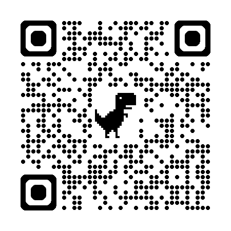

행복한 공직생활을 위한 길
- 9급 신규 공직자를 위한 특강 -
박태희 우정인재개발원장
공직의 첫발을 환영합니다
공직은 단순한 직장이 아닌,
국민에게 봉사하며 내면을 풍요롭게 가꾸는 여정입니다.🌱
질문: 앞으로 30년, 어떻게 보람과 행복을 찾을 수 있을까요? 🤔
 공직가치와 행복의 일치
공직가치와 행복의 일치
행복은 태도입니다.😊
공직가치와 인생가치가 일치할 때, 일은 사명이 됩니다.✨
긍정 · 감사 · 다름의 인정 = 원장이 드리는 세 가지 권고
 공직가치와 인생의 가치
공직가치와 인생의 가치
- 청렴 · 공정 · 책임감 · 신뢰
- 삶의 가치를 실현하는 장으로서의 공직
공직가치는 나의 인생가치와 연결될 때 힘을 가집니다.🔗
공직가치가 나의 가치와 만날 때
'해야 할 일' → '하고 싶은 일'
'해야 할 일' → '하고 싶은 일'
 과학의 세계 vs 가치의 세계
과학의 세계 vs 가치의 세계
- 과학: 절차와 정답 ⚙️
- 가치: 감정과 의미 💖
공직생활은 이 두 세계를 함께 걷는 여정입니다.🚶
 필연과 우연의 세계
필연과 우연의 세계
공직은 두 세계가 공존합니다.🌍
- 필연: 규칙과 절차
- 우연: 변수와 예측불가
칼 융: 의미 있는 우연(Synchronicity)
 우연에 대한 태도와 행복
우연에 대한 태도와 행복
같은 사건, 다른 해석:
- 하필이면 왜 지금?😩
- 때마침 이 일 덕분에?😌
감사는 그 간극을 메우는 다리입니다.🌉
 행복은 감사로 시작됩니다
행복은 감사로 시작됩니다
행복은 '이미 있는 복'을 인식하고 누리는 능동적 행위입니다.🙏
우연 속 긍정 요소를 포착할 줄 아는 사람 = 행복한 공직자☺️
 다름을 인정하는 자세
다름을 인정하는 자세
공직은 협업입니다. 표현방식이 다름을 이해합시다.🧩
“다름은 틀림이 아닙니다.”
 개리 채프먼의 다섯 가지 사랑의 언어
개리 채프먼의 다섯 가지 사랑의 언어
- 인정하는 말🗣️
- 함께하는 시간⏳
- 선물🎁
- 봉사🤝
- 스킨십✨
소통 방식의 이해는 협업의 신뢰 기반입니다.
 갈등은 표현방식 차이에서
갈등은 표현방식 차이에서
내가 주는 방식 ≠ 상대가 받는 방식
상대의 언어로 존중할 때 조직은 더 따뜻해집니다.🔥
 일상에서 발견하는 행복
일상에서 발견하는 행복
- 아침 인사☀️
- 점심 대화🍽️
- 퇴근 전 격려🌙
감사는 습관을 넘어 인격이 됩니다.
실천이 만드는 미래
작은 실천이 큰 보람과 행복으로 이어집니다.📈
- 미소 한 번 더🙂
- 고마움 표현❤️
- 다른 의견에 고개 끄덕이기🙆
함께 만들어가는 행복한 공직생활
 감사합니다
감사합니다
여러분의 공직 여정이 진정한 행복과 가치로 가득하기를 바랍니다.🌟
- 박태희 우정인재개발원장 -